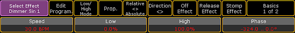
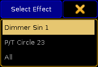

It is possible to live edit effects during a show if necessary.
To live edit an effect:
Select fixtures.
Tap a template effect.
Hint:
The sense and purpose of an template effect is that it is possible to select a template, adjust it without modifying the actual effect.
The encoder toolbar for live effects – also called the "Quick & Dirty Encoder Toolbar" – opens.

Encoder toolbar for live edit
Important:
All adjustments made with the help of the encoder toolbar for live effects are taken into the live programmer. Thus, being taken over into the next cue if stored.
Adjust the values by turning the encoders.
Important:
If the value Low is set to 0, tapping Prop. to toggle it to Incr. enables the encoders.
If you have more than two effects in the programmer, tapping Select Effect opens the pop-up Select Effect. 
Pop-up – select effect
To edit the values of an effect, select the effect in the pop-up first.
If you have less than three effects in the programmer, tapping Select Effect toggles between the different effects.
Edit Program. indicates that editing currently takes places in the programmer.
To open the effect editor, tap Edit Progr. It is then possible to edit the actual effect.
Important:
If you accidentally tap anywhere, the encoder toolbar for live edit disappears. To regain it, tap the cell with displaying the name of the effect pool.